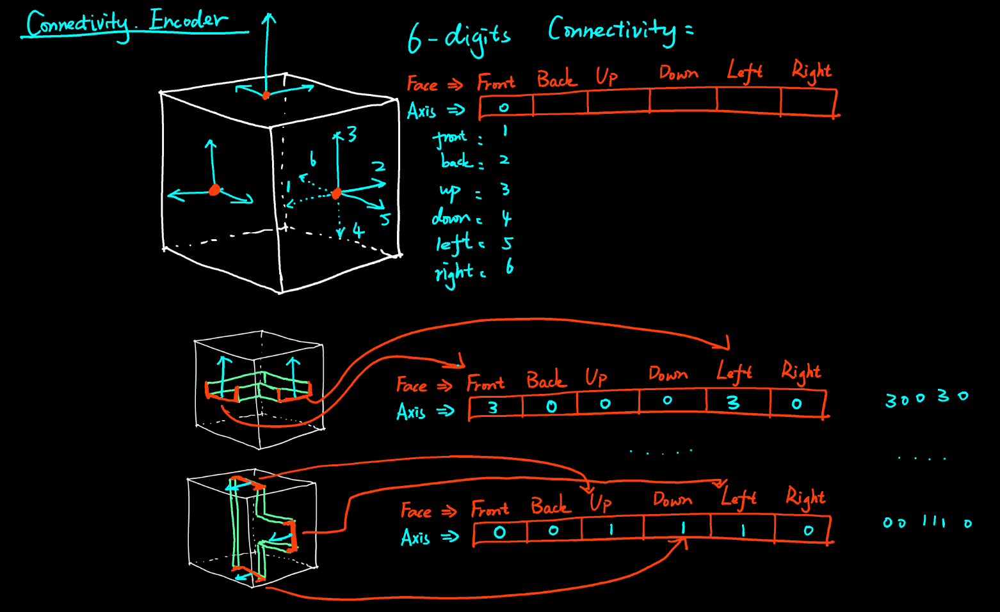

Wave Function Collapse
Wave Function Collapse
Project Info:
- Personal work
- Houdini & VEX
- Procedural Generation


I implemented this project in Houdini, inspired by Keijiro’s Wave Function Collapse .
The “wave function collapse”, or described as “Constraints Satisfaction Problem” in computer science, is a way of problem that trying to satisfy a system with individual constraints. An example could be Sudoku Puzzle, which each slots of number has constraints and influences other slots, and the whole 9x9 slot will shape a form that satisfy each slots.

This algorithm has a large application in level design and procedural generation(by Osckar Stalberg), Here I try to use 5 most fundamental module to shape a 3D maze that each slots are connected.
The algorithm consists of two parts.
Module Variation
Module Connectivity Encoding
Slots Inference
{kind=link}
Module Variation
We takes the most fundamental modules to shape this maze. We name is as “L, T, I, S, X” by their connectivity.
Think of them as LEGO Brick, each of them provides corresponding connectivity (as the blue markers).
{kind=link}
And we can simply connect them attached together to shape a simple maze.
But we can rotate them also, to create variations. Each varication actually produces a new connectivity. To make the variants, the methods are
1) if we rotate the module along each of 6 axis(forward, backward, up, down, left and right) and get one variant.
2) rotate long the specific axis with another 3 variants, with 90 degree each

Type refers to slot with different majored axis.
So eventually it will give us a giant variation map like this.

Module Connectivity Encoding
The purpose of encoding is for system to easily pick up the correct module that satisfies the neighbor connectivity. I take this method to encode the connectivity info.
Firstly, I take the “Normal axis” of geometry intersection of each cubic face, to describe connectivity. Because, Normal is identical and will rotate with the variations as we mentioned above. We can name Normal axis has six different types, pointing towards “front”, “back”,”up”,”down”,”left”, and “right” with corresponding digits, and if there is no intersection of this cubic face, “0” will represent it.
So that, we could use 6 digit number from 0-6 to describe each faces connectivity.

And by applying each 24 variations with given type (majored axis), we will get all the connectivity as shown:
{kind=link}

Slot Inference
Finally, after all these preparation, we get to the most exciting part, to generate the maze.

Firstly, we generate the point cloud and initiate neighbor’s connectivity. The border slots, since they have null neighbors, the connectivity to them are marked as 0 initially.

1) Find least entropy slot:
The “entropy” here means how much possibility that a slot could have, or intuitively, how many modules in library could satisfy current slot’s constraints. We will find the “least entropy slot” every steps.
2) Collapse:
Collapse is a important term that describe this slot is replaced with a specific module. From my implementation, I choose the module randomly as along as it could satisfy current constraints.
3) History Retrieve:
The slot will record the last steps of slot, that it could happen when there is no modules satisfied (we will meet this dilemma when solving Sudoku right? ) . When this occurs, the system will jump back to the last slots and re-choose the modules except current choice. If we can’t find one then keep jumping back, until a solution is provided.
here is a graph depicting the process.

it is fairly easy :)
You definitely could try more combinations of modules and connectivity. I provide some examples with this system below.
Examples
Procedural level design

Habitate 67
“Habitate 67” is designed by Moshe Safdie. comprises 354 identical pre-fabricated modules(11.7 m × 5.3 m × 3 m [38 ft 5 in × 17 ft 5 in × 9 ft 10 in]) arranged in various combinations.

“Habitate 67” is perfect for WFC algorithm.
And here is my approach result.